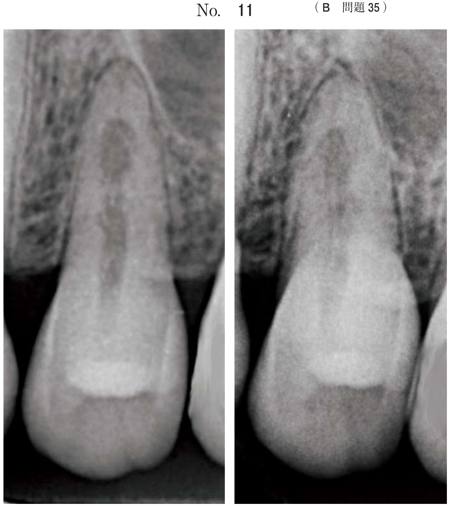

歯科用コーンビームCT（CBCT）
歯科用コーンビームCTとは
歯科独自の撮影方法として開発されたCT装置。円錐状（コーン状）のエックス線ビームを用いて、360°回転しながら顎骨の三次元データを取得する。
撮像原理の特徴
- 小さく絞り込まれた円錐（コーン）または四角錐状のエックス線ビーム
- 二次元検出器（フラットパネルディテクタ）で受像
- 360°回転しながら投影データを取得
- 座位または立位で撮影（小スペース）
口内法エックス線との比較
優れている点
- 三次元画像が得られる
- 開口障害、嘔吐反射の患者でも撮影可能
劣っている点
- 解像度が劣る
- 被曝線量が多い
- 金属によるアーチファクトの影響が大きい
口内法エックス線検査に比べて歯科用コーンビームCTが優れているのはどれか。1つ選べ。
b 被曝線量が少ない。
c 三次元画像が得られる。
d 軟組織を明瞭に描出できる。
e 金属によるアーチファクトが少ない。
【解説】歯科用CBCTは口内法と比較して、三次元画像が得られることが最大の利点。解像度は口内法の方が高く、被曝も口内法の方が少ない。軟組織の描出はCBCTでは困難。金属アーチファクトはCBCTの方が大きい。
通常CT（マルチスライスCT）との比較
歯科用CBCTの利点（通常CTと比較して）
| 項目 | 歯科用CBCT | 通常CT |
|---|---|---|
| 空間分解能（解像力） | 高い | 低い |
| 被曝線量 | 少ない | 多い |
| 装置サイズ | 小型・安価 | 大型・高価 |
| ボクセルサイズ | 小さい | 大きい |
歯科用CBCTの欠点（通常CTと比較して）
| 項目 | 歯科用CBCT | 通常CT |
|---|---|---|
| 濃度分解能 | 低い（軟組織観察不可） | 高い |
| CT値評価 | 不可能 | 可能 |
| 散乱線 | 多い（グリッドなし） | 少ない |
| スキャン方式 | 1回転で撮影 | らせん状（ヘリカル） |
通常のCTと比較した小照射野歯科用コーンビームCTの特徴はどれか。1つ選べ。
b 被曝線量が多い。
c 設置面積が広い。
d 軟組織の描出に優れる。
e らせん状にスキャンする。
【解説】歯科用CBCTは通常CTと比較して空間分解能（解像力）が高い。被曝は少なく、設置面積は狭い（小型）。軟組織の描出は通常CTの方が優れる（濃度分解能が高い）。らせん状スキャンは通常CT（ヘリカルCT）の特徴。
マルチスライスCTと比べた歯科用コーンビームCTの特徴はどれか。2つ選べ。
b 空間分解能が高い。
c 濃度分解能が高い。
d 画素値正確性が高い。
e ボクセルサイズが小さい。
【解説】歯科用CBCTはマルチスライスCTと比較して、空間分解能が高く、ボクセルサイズが小さい（=細かい構造を描出できる）。濃度分解能と画素値正確性（CT値の正確さ）は通常CTの方が高い。撮影時間は機種により異なる。
臨床応用
歯科用CBCTの三次元画像により、二次元画像では把握できなかった情報が得られる。
CBCTで把握できる情報
- 下顎管と病変の三次元的位置関係（頬舌的な関係）
- 歯根の形態（根管の走行、破折線）
- 顎骨の頬舌的な厚み
- 埋伏歯の三次元的位置
- インプラント埋入部位の評価
下顎左側臼歯部の腫脹を有する患者の初診時のパノラマエックス線画像（別冊No.20A）、頭部後前方向撮影エックス線画像（別冊No.20B）及びその後追加で撮影した歯科用コーンビームCT（別冊No.20C）を別に示す。
歯科用コーンビームCTで新たに得られた所見はどれか。1つ選べ。


b 左側下顎管の下方圧排
c 左側下顎管の病変舌側部通過
d 左側下顎枝部の頬舌的骨膨隆
e 左側下顎枝前縁の皮質骨非薄化
【解説】パノラマやP-A撮影（二次元画像）では、下顎管が病変の上下どちらを通過しているかは分かるが、頬舌的な位置関係は分からない。CBCTの断面像により、下顎管が病変の舌側を通過していることが新たに確認できた。これはCBCTの三次元的評価の利点を示す典型例。
- vs 口内法：三次元画像が得られる（優）、解像度・被曝は劣る
- vs 通常CT：空間分解能が高い・被曝少ない・小型（優）、濃度分解能・CT値評価は劣る
- 臨床的には三次元的な位置関係の把握に有用（下顎管、埋伏歯など）